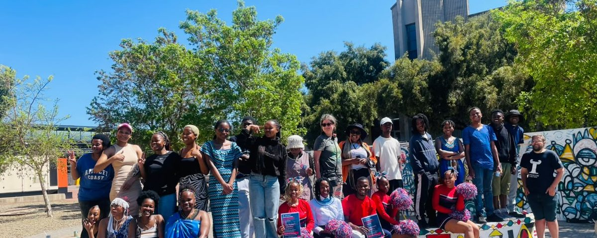
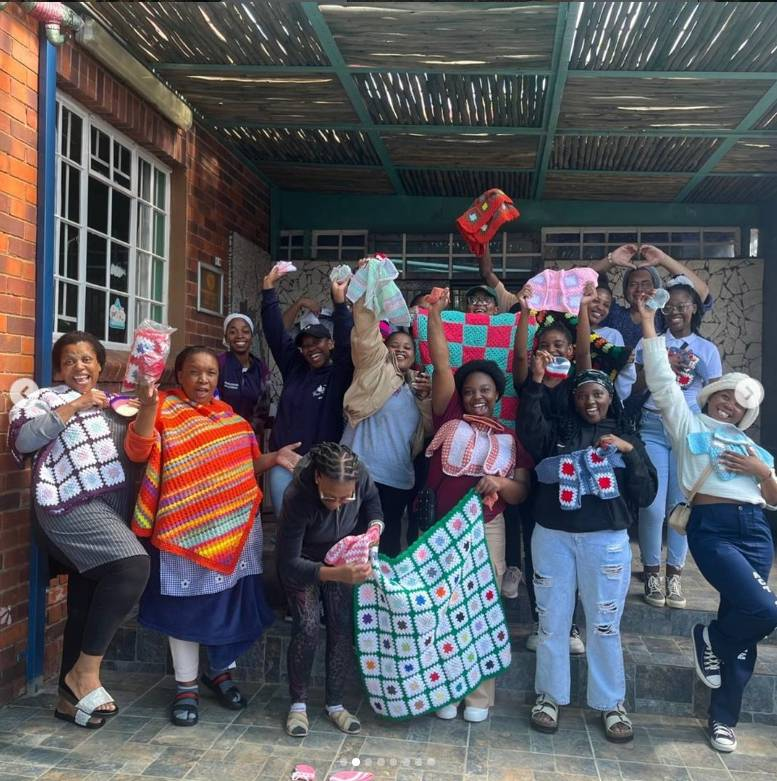
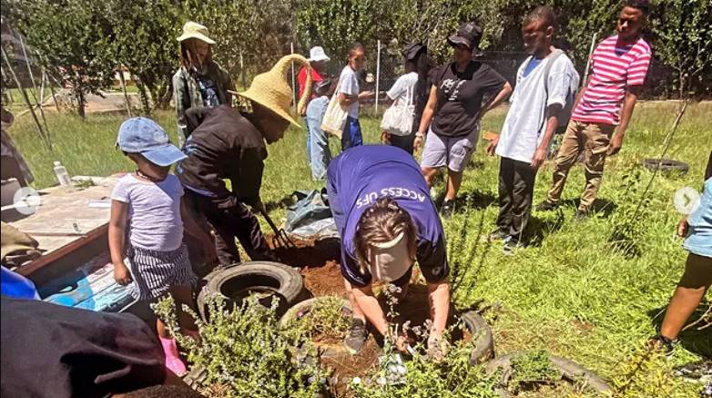
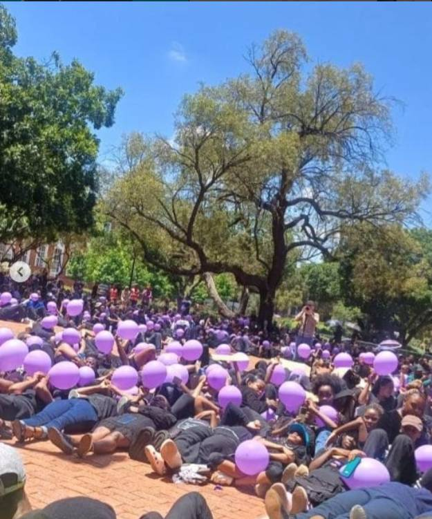
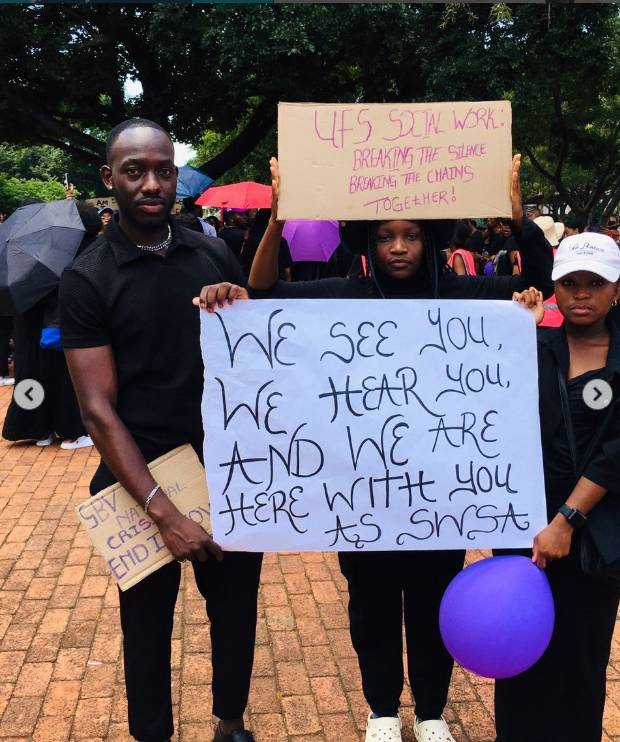
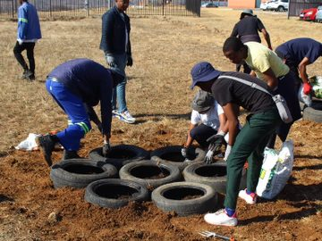
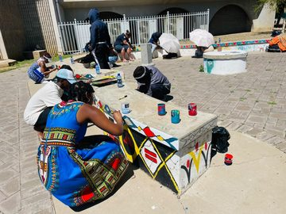
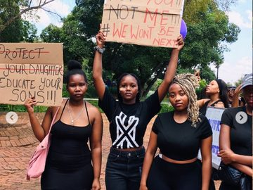
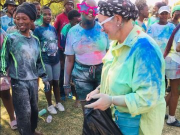
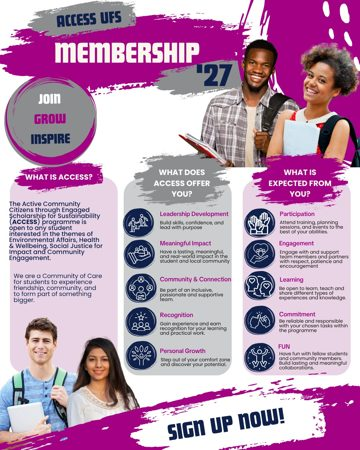

UFS co-curricular programme
We do not just learn. We act.
ACCESS UFS gives students the chance to connect what they learn with community engagement, volunteering and practical projects that make a real difference.

UFS co-curricular programmeWhat is ACCESS?
Learning that leaves a mark.
ACCESS stands for Active Community Citizens through Engaged Scholarship for Sustainability. It is a UFS co-curricular programme that creates space for learning, service and community engagement.
Students take part in projects, campaigns, workshops and action-learning activities that respond to social and environmental challenges, and they build skills while working with others.

What drives the work
Three pillars, one purpose.
Everything we run is anchored in these commitments.

Environment Affairs
Living labs and green projects that care for the places we share.

Health & Well-being
Building healthier, more supported students and communities.

Social Justice
Working towards fairness, access and dignity for everyone.
Life at ACCESS
Learning by doing




Ways to participate
Two pathways into ACCESS
Student Volunteerism Programme
A way for students to give their time to community engagement projects, workshops, events and awareness activities.
Action Learning Group
A way for students to take part in action learning and community-based projects that respond to real challenges.

Membership 2027
Join the fun in 2027
Sign up to the ACCESS citizenship programme to get up-to-date information on activities and events, and make your mark on the UFS community.
Sign up now Join the WhatsApp group
Questions? Contact ACCESS UFS.